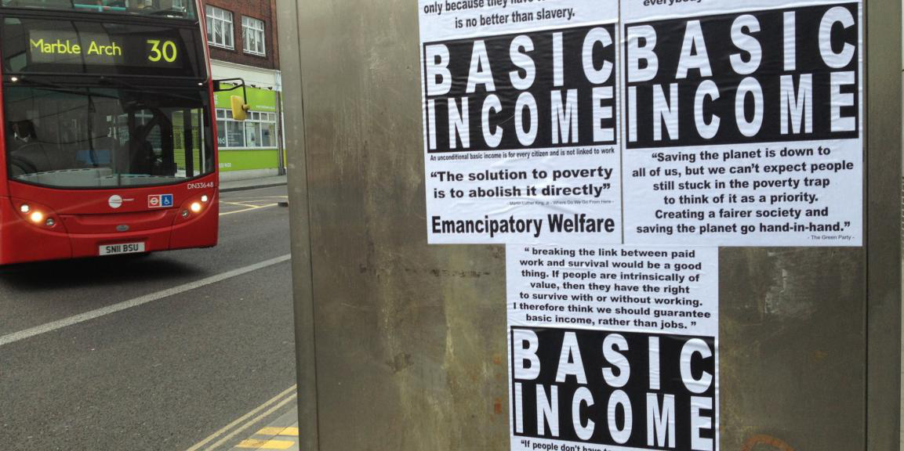

记者：酋长 | 2018年1月1日
2017年的麦肯锡报告预测，2030年人工智能将取代全球8亿个工作岗位。创新工场CEO李开复则认为，届时一半的工作都会被人工智能替代。 如何保护因AI失业的弱势群体，将成为各国重要的议题。
如何保护因AI失业的弱势群体，将成为各国重要的议题。
来自《经济学人》的消息称，美林银行最近预测表明，到2025年人工智能将创造140亿到330亿美元的颠覆性影响，其中包括因AI导致工作自动化而减少的90亿美元雇佣成本。从企业家的角度来是说，劳动力雇佣是成本；而对劳动者而言，这则是他们生活收入的来源。
重构社会收入再分配
2016年，瑞士政府为一项名为“UBI”的提案发起全民投票，所谓UBI（Universal Basic Income）即全民基本收入，是指在不考虑每个人的需求、就业状况或者技能水平的情况下，政府为每位公民提供固定的津贴。特别是在AI时代下，对于那些因人工智能发展而失业的人群，每月按时发放救济金以维持其基本生存需求。瑞士政府这项提案，就要求为全体瑞士公民，每个月发放2600法郎（约1.8万人民币）的收入，无论其工作与否。

这项提案还包含着一个大前提，“征收机器人税”。建立机器人征税制度是为保护传统人工职业的变化，向机器人收税以遏制其短时间内的发展。针对大型工厂等雇佣了大量蓝领工人的单位，倘若短时间内采取自动化设备代替人工，政府将收取高昂的税款纳入再分配，用以消减传统工人的失业率为社会带来的不良影响。同时，在岗位上创造价值的工人也要交税，用机器人取代人类的工作也需要交税，因为机器人归公司所有，没有薪资，那么这部分税应该由企业承担。在机器人普及应用过程中，凡是会对人类社会造成冲击的，也同样需要收取税费。
提高针对机器人的税率，也就是在征收机器人使用税的前提下，政府可以获得的大量资金，用来补助因为人工智能而被取代的工人们。在人工智能可能取代大部人的工作岗位下，社会将面临居高不下的失业率，这类人群的生活必须有保障才能帮助他们适应这个时代的变化，否则将会出现社会动荡，以及传统工人的抗议行为。因此，政府应当拨出大量资金去缓解这些失业人群的生存压力。
然而这项瑞士政府的提案没能通过决议，78%的选民最终投了反对票。很多人担心这项提案会导致不愿意工作的人数增加，让社会变得更不稳定。由此看来，在短期内，人类社会还无法对人因AI而失业的补偿性方案达成一致。
但目前加拿大、芬兰等国家已经开始将无条件基本收入付诸实践。支持者认为，在基本生活无忧的情况下，人类可以自由选择喜欢的工作，释放创造力，进而减少对医疗和社会服务的需求。而反对者则主要质疑，这种乌托邦式的福利制度是否会造成“葛优躺”，靠津贴度日的养懒汉行为？
创新工场CEO李开复认为的，机器换人表面是就业问题，但实际上其实是社会就业和分配结构面临转型挑战的问题。“一刀切”的全民基本收入并不符合未来社会发展规律的，在机器造成大量失业之前，我们必须进一步地探讨并在短期内进行政策实验，共同寻找一种全面的解决方案，包括创造新的职业、价值和社会规范，而不仅仅是重新分配资金。
引导失业人群再就业
部分工作领域需要积累经验，但凡是能积累工作经验便能胜任的职业，都容易被人工智能取代，而这些工作占人类工作总量的80%。人工智能面前，弱势群体不仅有低学历、低学习能力的人，也包含着高学历的行政人员和文书人员。
对于这些可能失业的人群，可以通过再就业来应对未来的就业变迁，在这其中，政府就需要去承担引导者的角色。
AI时代对劳动力市场的影响在于，人工智能能够更快、更好、更便宜地完成许多之前由人类完成的工作，近年来全球岗位结构已经能够清晰地体现出这一点；不仅如此，人工智能也能和人类形成互补，这一点可能是增加岗位数量和收入的，借助人工智能，人类的产出可以更高；人工智能带来的是创造需求，AI的新时代也会让许多新的需求出现，最简单的例子之一，就是人工智能课程的教学需求。
要实施对失业人群的就业保障，首先，政府可以创造并摸索人与人工智能相互合作的新工作模式，要使得传统工作人员能与AI相辅相成的工作，并提供培训。其次，短时间内，服务行业可以吸收被人工智能排挤出来的人力，因此可以去扩大服务行业的投资规模，将低技术工人转移至服务行业中，同时加强人与人之间的相互需求。最后，实施人类全面自由发展计划，AI时代下重复的、无意义的、大量费时费力的工作将由机器取代，然而人类便有足够的时间去做自己想做的事情，那么政府就应该全面帮助这些人在其爱好的领域上进行充分的、深入的学习与发挥并且让他们以此为生，因为足够深入的事情，人工智能无法代替。
教育制度改革势在必行
人工智能改变了劳动力市场所要求的工作性质和技能，工人需要做好接受教育和培训的准备，以图有工作可做。如果人类不能在教育孩子和培训成年人时使用日益人工智能驱动的经济所需的技能，这个就有可能导致大量人类落后，并造成社会动荡。
教育体制需要承担因AI而缺乏生存技能人群的再教育责任。麻省理工学院教学系统实验室的执行主任贾斯汀·赖克（Justin Reich）指出：“教育工作者总是找到培养下一代学生未来工作的新方法，而我们这一代人也不例外。大学是人工智能和自动化等颠覆性技术变革的驱动力，有责任思考他们更广泛的社会角色，创造机会使社会适应这种混乱。我们必须解决技术失业的后果，大学可以帮助那些受到不利影响的人提供技能和机会。职业技术培训、社区学院和国立大学，将继续发挥关键作用。
AI时代下应当采用更为符合时代的学历证明方式。由于专家们预计有效的新学习环境的出现以及数字问责制度的进步，许多专家相信新的学历认证项目将被建立，以证明工人参与培训计划和掌握技能。不同于以往人们进入大学学习4年再取得学历证明，在人工智能时代下有人预测，更多的工人将被鼓励开始使用在线和基于应用程序的学习系统。利用人工智能的授业方式更加快速有奇效的针对需要学习新技能或者从头学习新的知识。
虽然传统的大学学位在2026年仍将保持摇摆不定，但随着学习方式的发展，更多的雇主可能会接受备用的学历制度。也就是说，对于被时代抛弃的人们来说可以花费更少的时间来重新掌握新的学历。阿斯本研究所（Aspen Institute）通讯和社会项目执行主任兼副总裁查理·费斯通（Charlie Firestone）回答说：“对于技能和能力，例如徽章和类似技术，将会有更精确和更好的认证。雇主将会接受这些证据，因为他们证明了证明。在线学习将更加普遍，甚至作为正式课堂学习的辅助手段。
AI时代正迈着大步走来，形势的转变可能会比大多数人想象的都要快。如果不为AI时代的弱势群体们做好准备，到时候可能会留下许多的危机与恐慌。